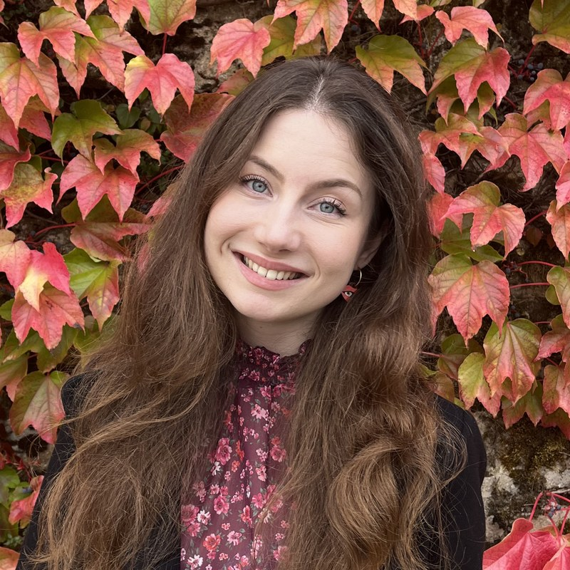
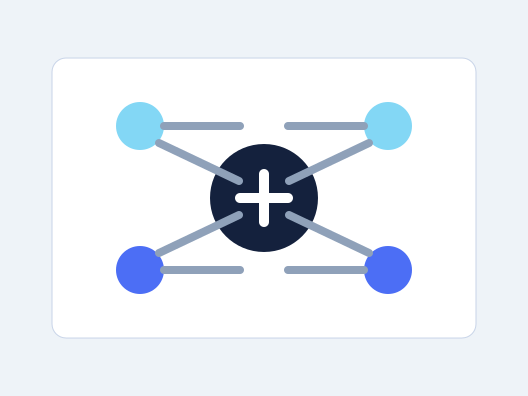

Responsible AI Governance
A short note on why AI governance needs institutions that are technically literate, accountable, and adaptable.

AI Policy Ph.D. Carnegie Mellon University
My name is Juliette Faivre, and I am French, Polish, and Luxembourgish. I have lived in more than seven countries, and I enjoy discovering new cultures, learning languages, and discussing new ideas. Technology was one of the things that tied those places together for me as a child.
As I studied business from 2018–2022, I embraced technology's power to create new products, increase productivity, and expand what people can build. At the same time, I stayed attentive to moments such as Cambridge Analytica, the Facebook Files, and the broader effects of technology on people and institutions. I became interested in the role business can play in designing technology, including Humane Technology, Tristan Harris' work, and more humane metrics. I also got involved in science and technology think-tank research through TTCSP at the University of Pennsylvania.
In 2022, I went on to complete a master's in Technology Policy at Cambridge. This coincided with generative AI and large language models emerging, which quickly became the focus of my research projects.
You can learn more personal facts about me in this section.
Supervisor: Sarah Cen.
Research on AI governance and policy.
Research on generative AI child safety, IoT and GenAI, AI regulations including the EU AI Act, and privacy laws.
Studied management, public policy, and technology-related questions in Philadelphia.
Studied business & management, politics, and technology.
My research focuses on AI governance: the institutions, rules, and design choices that shape how AI systems are developed, deployed, and made accountable. I am interested in how current and future rules can support responsible AI development and deployment while remaining technically informed and adaptable.
AI taxation. I am currently working on whether we can tax AI, what such taxes would target, and how they might shape public welfare.
I am also interested in privacy, ethical technology design, human–AI collaboration, explainability, and the societal impacts of digital technologies, especially in public-sector and organizational settings.
Methodologically, I come from a qualitative background, especially literature review, semi-structured interviews, and document analysis. Over time, I am building stronger quantitative skills to complement this work. I have foundational skills in R, Python, SPSS, and survey design (Qualtrics and Microsoft Forms), and am gaining more every day with the Ph.D. and my supervisor, Prof. Sarah Cen.
For a fuller list and updates, please consult my Google Scholar profile.
Occasional writing on technology, policy, and ideas I find worth thinking about.

A short note on why AI governance needs institutions that are technically literate, accountable, and adaptable.
Reflections on how governments can make online services easier to use without losing transparency or public confidence.
A starting point for thinking about child well-being, platform design, and the safeguards that emerging AI systems require.
I have been lucky to live, study, work, and travel across several places that shaped how I see technology, policy, and people. This space is for a quieter archive of those moments.
The best way to reach me is by email. I welcome messages from researchers, policymakers, and anyone working on the questions above.